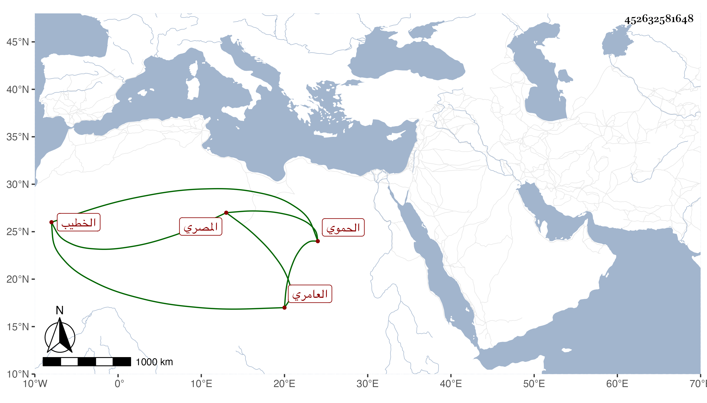

0902Sakhawi.DawLamic.ITO20230111-ara1.EIS1600.452632581648
Biography ID: 452632581648
334
محمد بن محمد بن عبد المحسن بن عبد اللطيف بن التقي محمد بن الحسين ابن رزين العلاء بن العز العامري الحموي الأصل المصري الخطيب والد التاج محمد الآتي ويعرف كسلفه بابن رزين . ولد سنة بضع وثلاثين وسبعمائة واسمع علي جده لأمه السراج الشطنوفي وعلى أبي الحرم القلانسي والعز بن جماعة وغيرهم وحدث سمع منه الفضلاء وذكره شيخنا في معجمه فقال سمعت عليه سبعة أحاديث بقراءة التقي الفاسي وحضرتها ابنتي زين خاتون وولى خطابة جامع الأزهر ولم يكن بالمرضي ، وكذا قال في إنبائه خطب بالجامع الأزهر وباشر أوقافا ولم يكن متصاونا . مات في رمضان سنة خمس . وهو في عقود المقريزي في موضعين عفا الله عنه .
